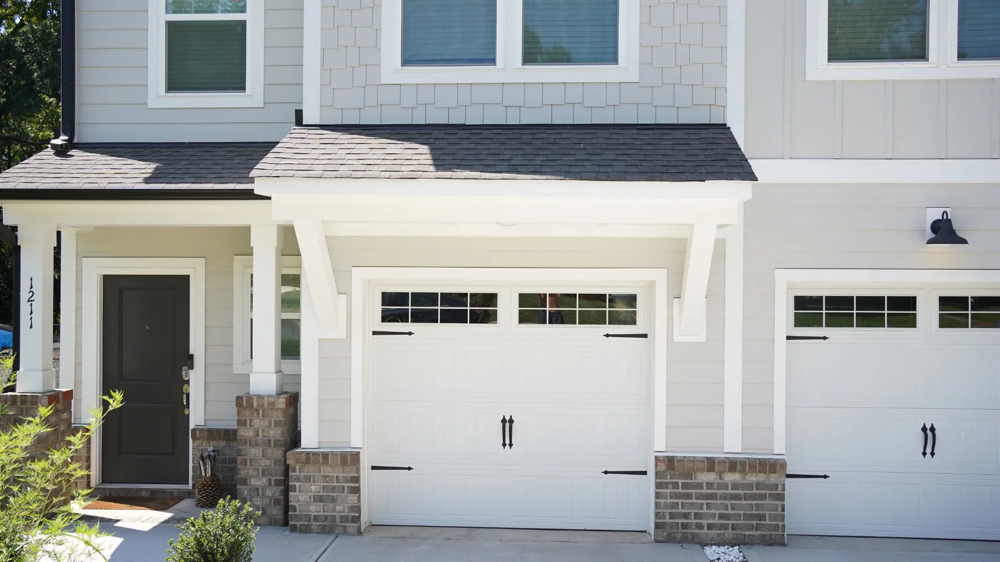
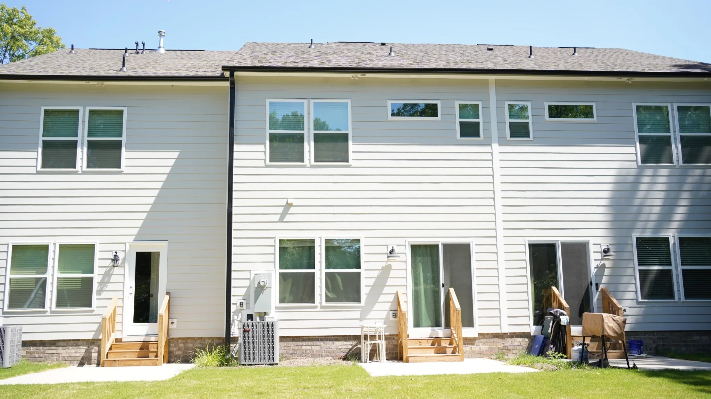

Juan + Rachel
Juan + Rachel
Nearly $10,000 in debt paid off.
During their time with Bedrock, Juan and Rachel were able to reduce debt while creating more room for their family's next season.
Bedrock pairs affordable housing with intentional financial goals so people serving in ministry can create margin and build toward greater stability.
Start an inquiry
Who it's for
Bedrock intentionally serves households where at least one person works in ministry. The program is designed for people who need financial margin and are ready to work toward clear financial goals.
Bedrock currently centers its work in the Charlotte area.
How the housing works
Residents sign a lease and pay rent, generally structured around 20 to 25 percent of household income.
Bedrock provides housing support that reduces the effective cost of housing and creates monthly margin.
Residents direct that margin toward goals such as debt payoff, savings, and preparation for homeownership.
What participation looks like
Applicants identify the specific financial goals they want to work toward.
Before move-in, residents rework their budget and show how their margin will support those goals.
Residents sign an agreement that lays out program expectations and mutual commitments.
Four progress check-ins focus on housing and financial goals, savings, debt payoff, and other relevant milestones.
The timeline
The journey varies by household. Some residents may reach their goals in about two years. Three to four years is a common range, while more complex situations may take closer to five.
Bedrock is designed to create enough time and structure for progress that can last beyond the program.
What residents have done
Juan + Rachel
During their time with Bedrock, Juan and Rachel were able to reduce debt while creating more room for their family's next season.
 Cami + Collin
Cami + Collin
Over roughly two years, they tackled debt, began saving, and eventually purchased a townhome.

Interested in Bedrock?
An inquiry is the first step. It gives Bedrock a chance to learn about your situation, financial goals, and whether the program may be a fit.
Start an inquiryFrequently asked
Yes. Residents sign a lease and continue paying rent. Bedrock's housing support helps reduce the overall burden so monthly margin can be directed toward financial goals.
At least one person in the household is expected to work in ministry. Bedrock's current program is intentionally designed around people serving through churches and ministry-related work.
The timeline varies. Some journeys may take around two years, while three to four years is common and more complex situations can take closer to five.
Residents identify goals, build a budget around those goals, sign an agreement, and participate in periodic progress check-ins focused on their housing and financial plan.